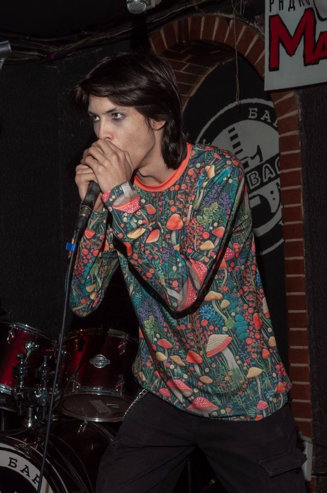
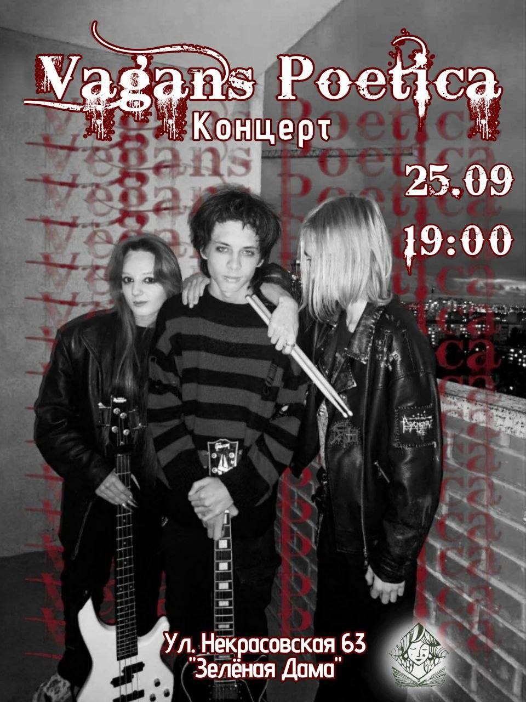
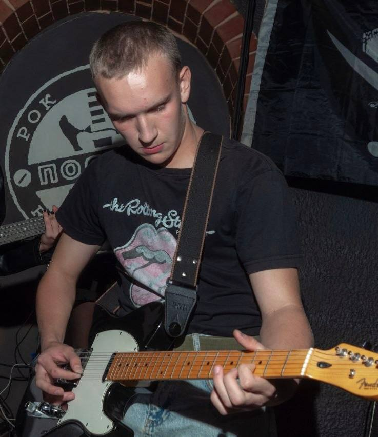
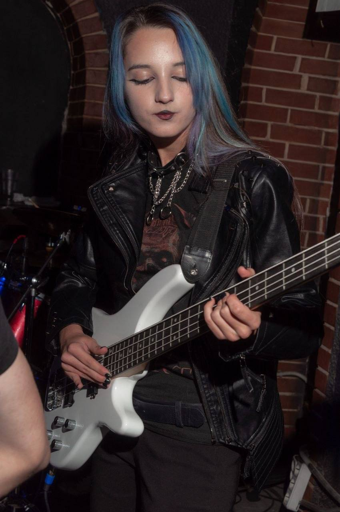
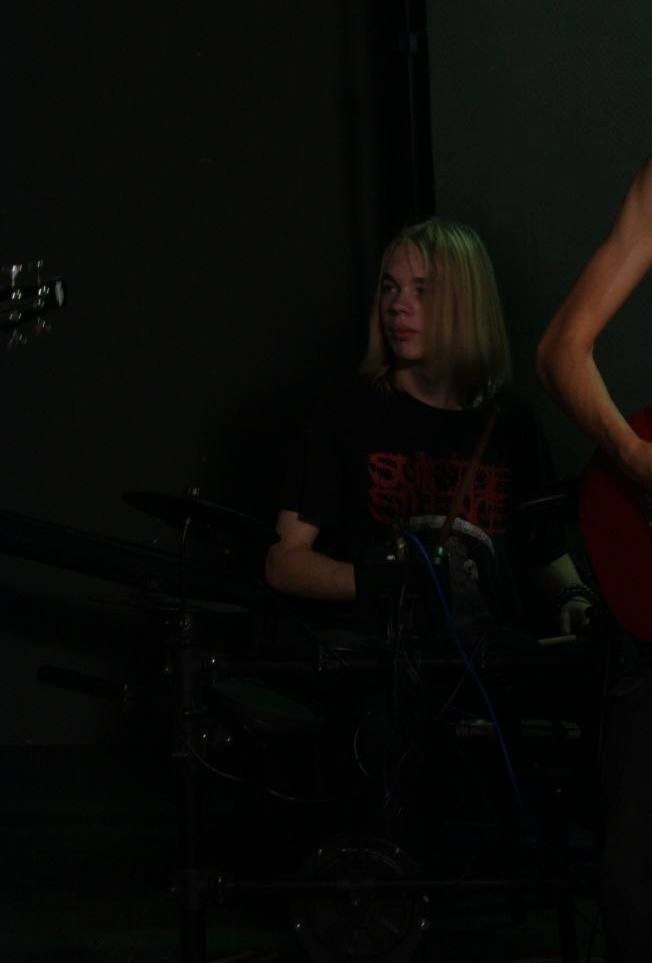
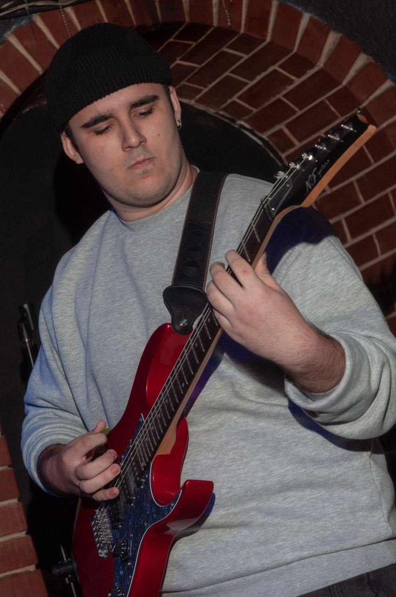

01Даня
Вокал
Вокалист-лидер группы Vagans poetica. Пишу текста для нашей группы и большую часть гитарных партийPUNK / LIVE / RUSSIA
Панк-рок, который
не боится быть нежным

ЛЮДИ ЗА ШУМОМ
Пять человек. Громкие усилители. Ни одного компромисса.

01Вокал
Вокалист-лидер группы Vagans poetica. Пишу текста для нашей группы и большую часть гитарных партий
02Соло-гитара
сделайте описание
03Бас-гитара
сделайте описание
04барабаны
Барабанщик группы, занимаюсь сведением всех треков
05Ритм-гитара
сделайте описаниеDIY / NO LABELS / NO BOSSES
Запись, струны, репетиции и концерты держатся на людях, которым не всё равно. Если хочешь помочь группе — любая сумма важна.
живьём громче.
намного честнее.
Vagans Poetica — это не просто группа. Это три голоса, одна гитара, один барабан и слишком много чувств.
Мы играем панк-рок, потому что не умеем иначе. Наши песни — про жизнь, боль, любовь и свободу.